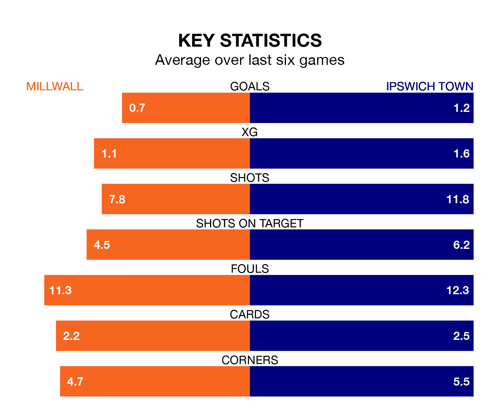

Millwall face Ipswich Town at the Den on late Wednesday looking to secure a first win in six EFL Championship games.
The Lions have lost four and drawn one matches since they last earned three points – against Bristol City on January 1.
They face an Ipswich side who have won one and drawn three over that time.
With 55 goals in 30 games so far this season, Ipswich are the league's joint-third-highest scorers with 1.8 goals per game. And they are conceding fewer than average, letting in 40 goals at a rate of 1.3 per game.
Millwall, meanwhile, are below average scorers, with 1.0 goal per game, compared to a league average of 1.4. They have conceded 1.3 goals per game.
In the last 10 years, Millwall and Ipswich have played each other on eight occasions. Millwall won two of them, Ipswich four, and they drew twice.
On average, the Lions scored 1.8 goals and the Blues 2.1 in those matches.
Their last meeting was on November 29, when Ipswich won 3-1 at home.
Town are fourth in the table after 30 games, of which they have won 17 and drawn nine, earning 60 points.
The Lions are 14 places behind the Blues in 18th, with eight wins and nine draws putting them on 33 points.
The visitors' Leif Davis is the league's most creative player, racking up 11 assists in 27 appearances so far this season.
For the home side, Zian Flemming has set up the most goals, having laid on four assists in 31 games.
Millwall's last match was on Sunday, a 2-1 loss against Coventry City, with Romain Joy Kouakou Esse getting the goal for the Lions.
Ipswich drew 2-2 with West Bromwich Albion last time out, on Saturday, with Nathan Broadhead and Omari Giraud-Hutchinson on the scoresheet.
Updated: 13:30 (UTC), 12/02/24